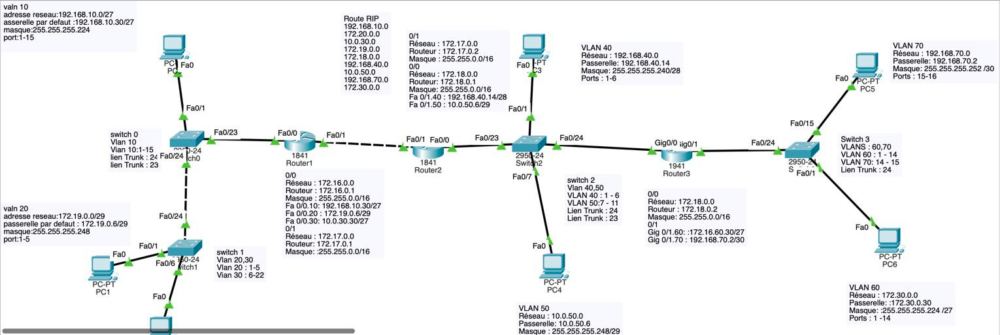

Mise en place d'un système DHCP
Réalisation en formation — F03Contexte
Dans le cadre des travaux pratiques réseau du BTS SIO, j'ai mis en place un serveur DHCP (Dynamic Host Configuration Protocol) permettant l'attribution automatique d'adresses IP aux postes d'un réseau local. Ce protocole est fondamental dans l'administration des infrastructures réseau d'entreprise.
Objectifs
- Comprendre le fonctionnement du protocole DHCP
- Installer et configurer un serveur DHCP
- Définir une plage d'adresses IP (pool)
- Configurer les options réseau (passerelle, DNS)
- Tester l'attribution automatique depuis un client
Technologies utilisées
DHCP
Réseau LAN
TCP/IP
Linux / Windows Server
Configuration réalisée en environnement de laboratoire avec machines virtuelles.
Notions abordées
- Modèle client/serveur DHCP (DORA : Discover, Offer, Request, Acknowledge)
- Plages d'adresses et exclusions
- Durée de bail (lease time)
- Réservations d'adresses par adresse MAC
- Options DHCP : passerelle par défaut, serveur DNS
Réalisations
- Installation et configuration du service DHCP
- Définition d'un pool d'adresses IP dans le sous-réseau
- Configuration des options réseau (gateway, DNS)
- Tests d'attribution IP depuis plusieurs clients
- Vérification des baux avec les outils système
Compétences acquises
- Administration de services réseau de base
- Compréhension du protocole DHCP et de TCP/IP
- Dépannage de problèmes d'attribution IP
- Gestion d'une infrastructure réseau locale
Topologie réseau — Cisco Packet Tracer
